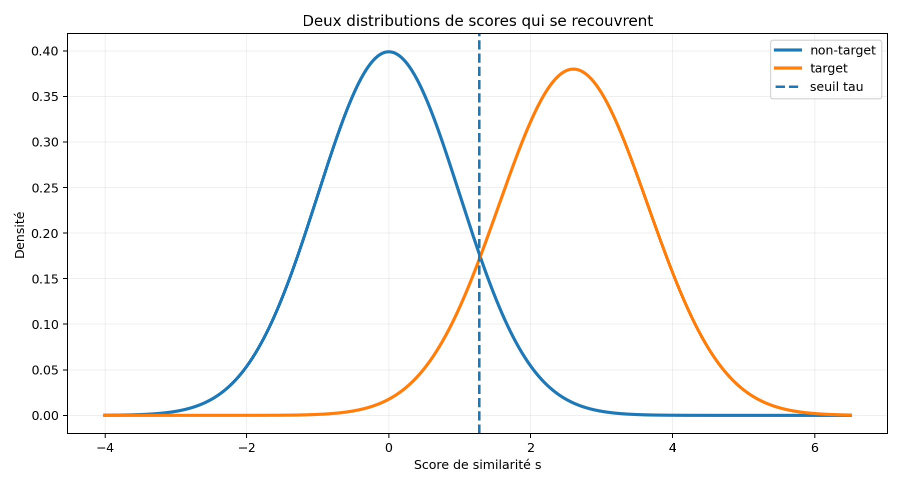
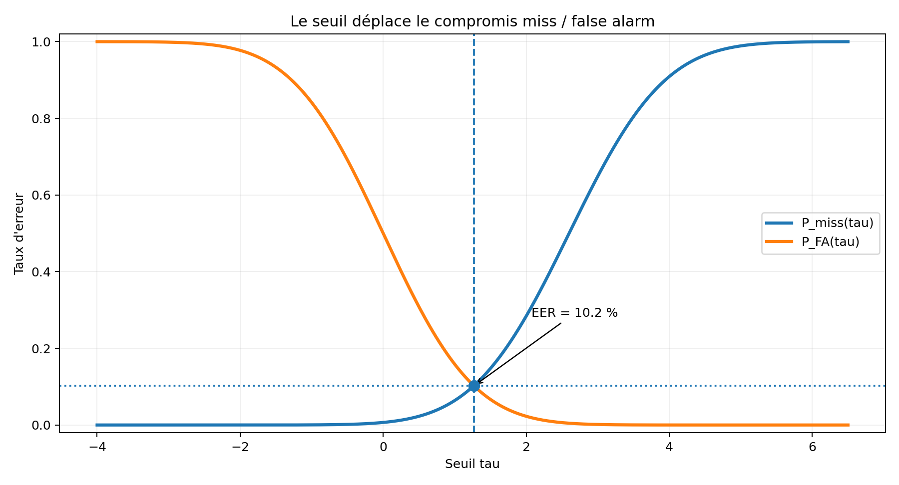
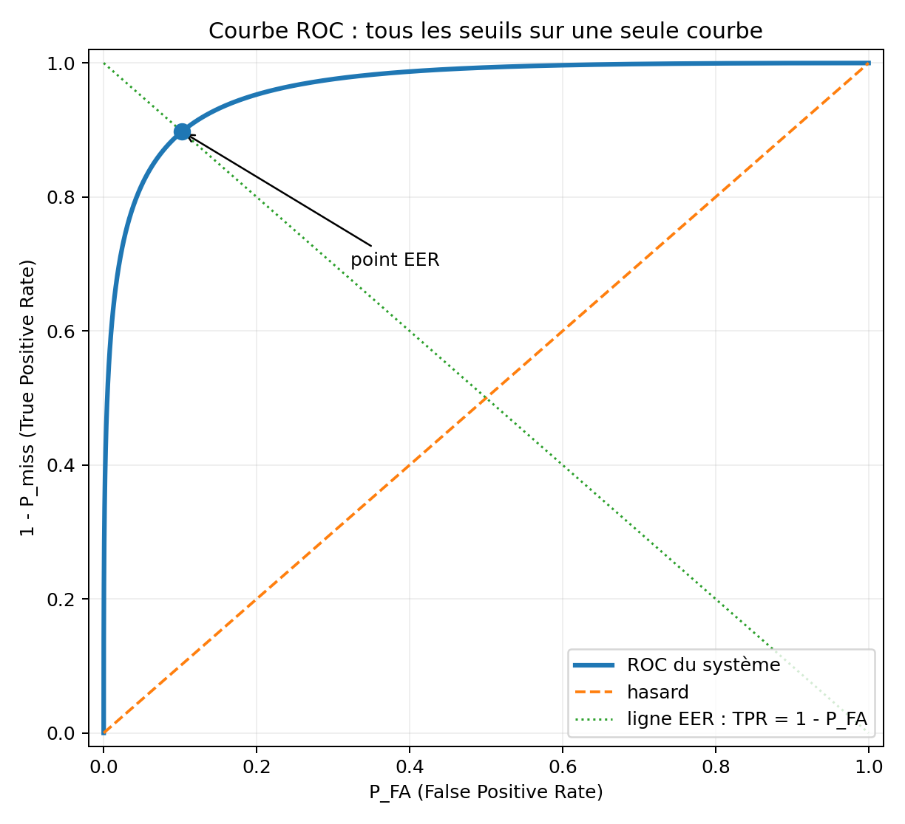
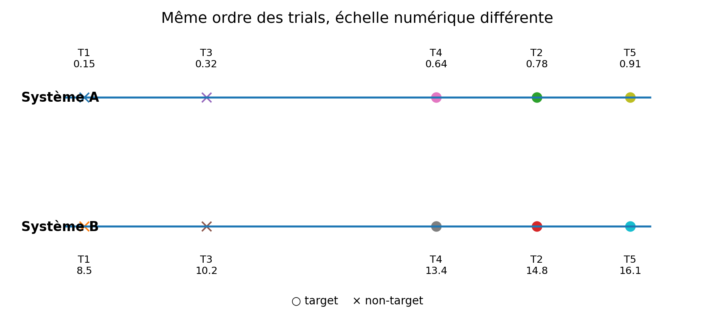
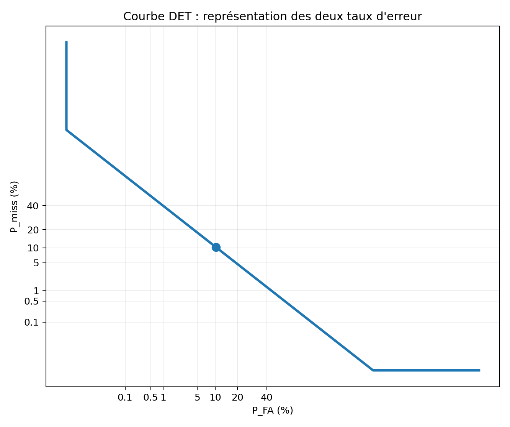
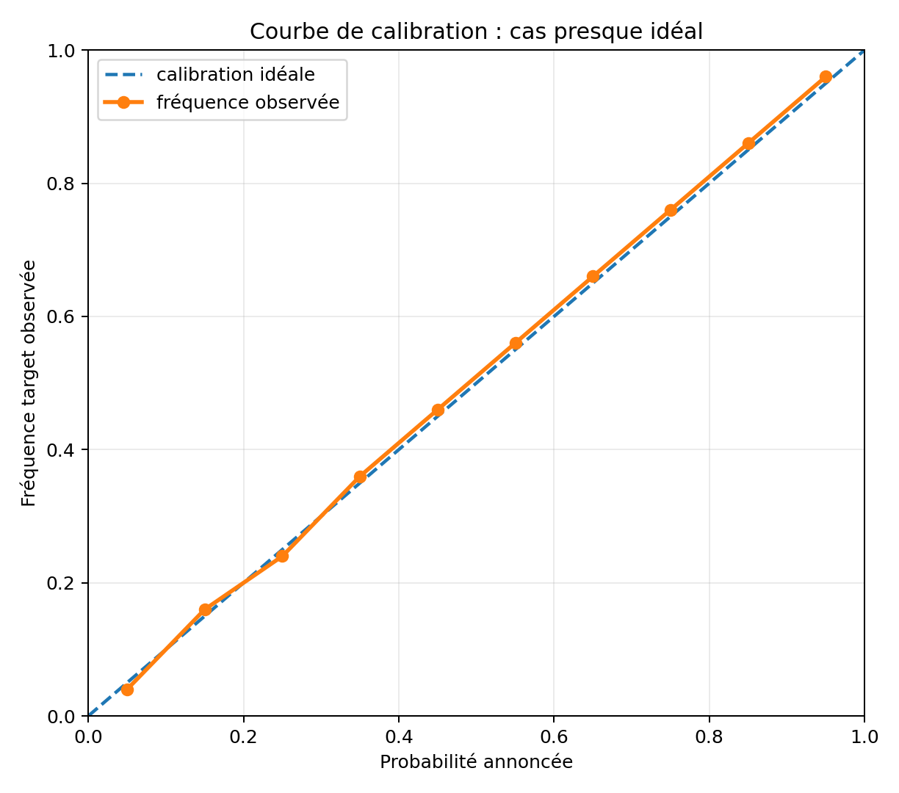
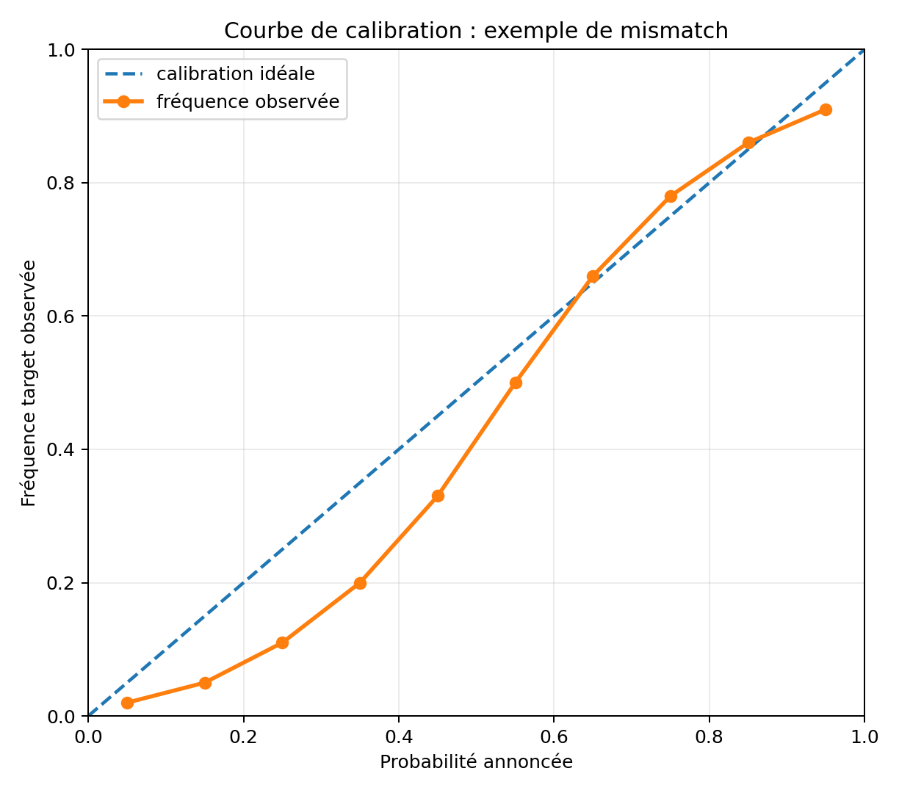

1. Du score à la décision
Objectif temporel : environ 45 minutes jusqu’à la slide Pause. Ne pas refaire tout CM1 : rappeler seulement score/seuil, puis passer vite aux priors et coûts.
Rappel visuel : distributions de scores
Sur beaucoup de trials, on obtient deux distributions empiriques :
scores target ;
scores non-target .

Deux erreurs pour un seuil \(\tau\)
On décide target si
\[
s>\tau.
\]
Alors :
\[
\boxed{
P_{\mathrm{FA}}(\tau)
=
P(s>\tau\mid H_{\mathrm{non}})
}
\]
est le taux de false alarm , et
\[
\boxed{
P_{\mathrm{miss}}(\tau)
=
P(s\le\tau\mid H_{\mathrm{tar}})
}
\]
est le taux de miss .
Déplacer le seuil : une image

Quand \(\tau\) augmente :
\[
P_{\mathrm{FA}}\downarrow
\qquad\text{mais}\qquad
P_{\mathrm{miss}}\uparrow.
\]
Rappel : Equal Error Rate
L’EER est le taux d’erreur atteint au seuil \(\tau_{\mathrm{EER}}\) tel que
\[
\boxed{
P_{\mathrm{FA}}(\tau_{\mathrm{EER}})
=
P_{\mathrm{miss}}(\tau_{\mathrm{EER}})
}.
\]
L’EER résume la qualité de séparation des deux distributions en un nombre , mais il correspond à un operating point particulier qui ne dépend pas des coûts de l’application.
Courbe ROC
Au lieu de choisir un seul seuil, on fait varier \(\tau\) sur toutes ses valeurs.
Pour chaque seuil, on trace :
\[
\boxed{
x=P_{\mathrm{FA}}(\tau)
}
\]
et
\[
\boxed{
y=\mathrm{TPR}(\tau)
=
1-P_{\mathrm{miss}}(\tau).
}
\]

Maintenant : deux systèmes sur les mêmes trials
Considérons exactement les mêmes trials , mais deux systèmes qui produisent des scores différents.
T1
non-target
\(0.15\) \(8.5\)
T2
target
\(0.78\) \(14.8\)
T3
non-target
\(0.32\) \(10.2\)
T4
target
\(0.64\) \(13.4\)
T5
target
\(0.91\) \(16.1\)
Les nombres sont très différents, mais regardons leur ordre .
Même ranking, échelles différentes

Comme
\[
s_B=10s_A+7
\]
est strictement croissante :
\[
s_A^{(i)}>s_A^{(j)}
\iff
s_B^{(i)}>s_B^{(j)}.
\]
Donc les deux systèmes rangent les trials exactement dans le même ordre.
Conséquence sur ROC et EER
Puisque la ROC ne dépend que du ranking obtenu lorsque le seuil se déplace :
\[
\boxed{
\mathrm{ROC}_A=\mathrm{ROC}_B
}
\]
et donc
\[
\boxed{
\mathrm{EER}_A=\mathrm{EER}_B.
}
\]
Les deux systèmes ont donc la même discrimination .
Mais les seuils numériques ne sont pas les mêmes
Supposons qu’un seuil
\[
\tau_A=0.60
\]
soit utilisé sur le système A.
La décision équivalente sur B demande :
\[
\tau_B
=
10\tau_A+7
=
13.
\]
Ainsi :
\[
\boxed{
s_A>0.60
\iff
s_B>13.
}
\]
Le même nombre de seuil, par exemple \(0.60\) , n’a aucun sens sur les deux systèmes.
Voilà le problème de calibration
A et B savent aussi bien ordonner les trials :
\[
\text{même ROC, même EER}.
\]
Mais la valeur numérique du score n’a pas la même signification.
C’est la différence entre :
\[
\boxed{\text{discrimination}}
\qquad\text{et}\qquad
\boxed{\text{calibration}}.
\]
La suite du CM va répondre à deux questions :
quel seuil devrait imposer l’application ? comment mettre le score sur une échelle où ce seuil a un sens ?
Et l’AUROC ?
L’Area Under the ROC Curve (AUROC) résume la ROC par un nombre :
\[
0.5\le \mathrm{AUROC}\le1.
\]
\(0.5\) : ranking aléatoire ;\(1\) : séparation parfaite.
Dans la suite du cours, nous utiliserons surtout :
EER — Equal Error Rate ;DET — Detection Error Trade-off : représentation de \(P_{\mathrm{FA}}\) face à \(P_{\mathrm{miss}}\) ;DCF — Detection Cost Function : coût moyen des erreurs pour une application donnée.
La DET arrive juste après ; la DCF sera définie après l’introduction des priors et des coûts .
Courbe DET
En speaker verification, on représente souvent directement les deux erreurs :
\[
P_{\mathrm{FA}}
\quad\text{vs}\quad
P_{\mathrm{miss}}.
\]

Les axes sont transformés pour rendre les faibles taux d’erreurs plus lisibles.
Pourquoi l’EER ne suffit pas pour décider
L’EER choisit implicitement un compromis symétrique entre les deux erreurs.
Mais une application réelle peut préférer un autre point de la ROC / DET.
\[
\boxed{
\text{le bon seuil dépend de ce que coûtent les erreurs}
}
\]
C’est précisément ce que la théorie de la décision bayésienne va formaliser.
Exemple : un target peut être rare
Supposons
\[
\pi=10^{-3}.
\]
Avant même d’écouter le signal :
\[
P(H_{\mathrm{non}})=0.999.
\]
Accepter un imposteur peut donc devenir extrêmement pénalisant si on utilise trop facilement l’hypothèse target.
Question ?
Dans une application d’authentification très sensible :
Quelle erreur peut-on vouloir rendre particulièrement rare ?
Typiquement la false alarm :
\[
H_{\mathrm{non}}
\longrightarrow
\text{décision target}.
\]
On peut alors choisir un coût \(C_{\mathrm{FA}}\) élevé et/ou un prior target faible.
Du coût au risque : la vérité est inconnue
Au moment de décider, on ne connaît pas encore la vraie hypothèse.
Après avoir observé le trial \(x\) , le système dispose seulement de probabilités :
\[
P(H_{\mathrm{tar}}\mid x),
\qquad
P(H_{\mathrm{non}}\mid x).
\]
Le risque conditionnel d’une décision \(d\) est alors son coût moyen attendu :
\[
\boxed{
R(d\mid x)
:=
\sum_{H\in\{H_{\mathrm{tar}},H_{\mathrm{non}}\}}
\underbrace{C(d,H)}_{\text{coût si }H\text{ est vraie}}
\underbrace{P(H\mid x)}_{\text{probabilité de }H\text{ après avoir vu }x}
}
\]
Autrement dit : coût × probabilité , puis on additionne les deux cas possibles.
Risque si l’on accepte
Si on décide target :
si \(H_{\mathrm{tar}}\) est vraie : bonne décision, coût \(0\) ;
si \(H_{\mathrm{non}}\) est vraie : false alarm , coût \(C_{\mathrm{FA}}\) .
Donc
\[
\begin{aligned}
R(\mathrm{tar}\mid x)
&:=0\times P(H_{\mathrm{tar}}\mid x)
+C_{\mathrm{FA}}P(H_{\mathrm{non}}\mid x)\\
&=\boxed{C_{\mathrm{FA}}P(H_{\mathrm{non}}\mid x)}.
\end{aligned}
\]
Interprétation : accepter devient risqué si une false alarm coûte cher et/ou si \(H_{\mathrm{non}}\) reste probable.
Risque si l’on rejette
Si on décide non-target :
si \(H_{\mathrm{non}}\) est vraie : bonne décision, coût \(0\) ;
si \(H_{\mathrm{tar}}\) est vraie : miss , coût \(C_{\mathrm{miss}}\) .
Donc
\[
\begin{aligned}
R(\mathrm{non}\mid x)
&:=C_{\mathrm{miss}}P(H_{\mathrm{tar}}\mid x)
+0\times P(H_{\mathrm{non}}\mid x)\\
&=\boxed{C_{\mathrm{miss}}P(H_{\mathrm{tar}}\mid x)}.
\end{aligned}
\]
Interprétation : rejeter devient risqué si un miss coûte cher et/ou si \(H_{\mathrm{tar}}\) est très probable.
Règle de Bayes
La règle est très simple :
\[
\boxed{\text{choisir la décision dont le risque conditionnel est le plus faible}.}
\]
On décide donc target si
\[
\underbrace{C_{\mathrm{FA}}P(H_{\mathrm{non}}\mid x)}_{\text{risque d'accepter}}
<
\underbrace{C_{\mathrm{miss}}P(H_{\mathrm{tar}}\mid x)}_{\text{risque de rejeter}}.
\]
En réarrangeant :
\[
\boxed{
\frac{P(H_{\mathrm{tar}}\mid x)}{P(H_{\mathrm{non}}\mid x)}
>
\frac{C_{\mathrm{FA}}}{C_{\mathrm{miss}}}
}
\]
Le membre de gauche décrit ce que suggèrent les données ; celui de droite décrit ce que préfère l’application .
Bayes : faire apparaître les vraisemblances
La formule de Bayes permet de séparer deux informations :
ce que le trial \(x\) apporte comme évidence ;
ce que l’on croyait avant de voir \(x\) .
\[
\frac{P(H_{\mathrm{tar}}\mid x)}{P(H_{\mathrm{non}}\mid x)}
=
\underbrace{
\frac{p(x\mid H_{\mathrm{tar}})}{p(x\mid H_{\mathrm{non}})}
}_{\text{évidence apportée par }x}
\underbrace{
\frac{\pi}{1-\pi}
}_{\text{prior odds}}.
\]
On appelle
\[
\boxed{
LR(x)
:=
\frac{p(x\mid H_{\mathrm{tar}})}{p(x\mid H_{\mathrm{non}})}
}
\]
le likelihood ratio .
Par exemple, \(LR(x)=10\) signifie : le trial observé est 10 fois plus vraisemblable sous l’hypothèse target que sous l’hypothèse non-target .
Lire un LR et un LLR
Le likelihood ratio se lit directement :
\(LR>1\) les données favorisent \(H_{\mathrm{tar}}\)
\(LR=1\) les données ne favorisent aucune hypothèse
\(LR<1\) les données favorisent \(H_{\mathrm{non}}\)
On utilise souvent son logarithme :
\[
\ell(x):=\log LR(x).
\]
Alors
\[
\ell>0 \Rightarrow H_{\mathrm{tar}}\text{ favorisée},
\qquad
\ell<0 \Rightarrow H_{\mathrm{non}}\text{ favorisée}.
\]
Attention : favoriser une hypothèse ne signifie pas encore qu’on doit la choisir ; le prior et les coûts peuvent déplacer le seuil loin de \(0\) .
Seuil bayésien sur le likelihood ratio
En injectant la formule de Bayes dans la règle de décision, on obtient :
\[
\boxed{
LR(x)
>
\frac{C_{\mathrm{FA}}(1-\pi)}{C_{\mathrm{miss}}\pi}
}
\]
Donc le seuil optimal sur le likelihood ratio est
\[
\boxed{
\tau_{LR}
:=
\frac{C_{\mathrm{FA}}(1-\pi)}{C_{\mathrm{miss}}\pi}.
}
\]
Lecture informatique : le backend fournit \(LR(x)\) ; l’application fournit un seuil construit à partir de \((\pi,C_{\mathrm{FA}},C_{\mathrm{miss}})\) .
Passer au log-likelihood ratio
Les likelihood ratios peuvent varier sur plusieurs ordres de grandeur. On travaille donc plutôt avec
\[
\ell(x):=\log LR(x).
\]
Le logarithme étant strictement croissant, la décision ne change pas :
\[
\boxed{
\ell(x)
>
\underbrace{
\log\frac{C_{\mathrm{FA}}(1-\pi)}{C_{\mathrm{miss}}\pi}
}_{\tau_{\mathrm{Bayes}}}
}
\]
Le LLR met simplement la même information sur une échelle additive et plus pratique numériquement.
Pourquoi le LLR est pratique ?
Le système fournit
\[
\ell(x)
\]
une quantité liée à l’évidence apportée par les données.
L’application fournit
\[
\pi,\;
C_{\mathrm{miss}},\;
C_{\mathrm{FA}}.
\]
Ils déterminent le seuil.
Un même système peut donc être utilisé dans plusieurs applications sans être réentraîné .
Question numérique
Supposons :
\[
\pi=0.01,
\qquad
C_{\mathrm{miss}}=10,
\qquad
C_{\mathrm{FA}}=1.
\]
Quel est le seuil bayésien sur le LLR ?
\[
\tau_{\mathrm{Bayes}}
=
\log\frac{1\times0.99}{10\times0.01}
=
\log(9.9)
\approx
\boxed{2.29}.
\]
Interprétation
Avec ce choix de prior et de coûts :
\[
\ell>2.29
\quad\Longrightarrow\quad
\text{target}.
\]
Un LLR légèrement positif ne suffit pas forcément.
Le seuil \(0\) n’est optimal que dans le cas particulier :
\[
\pi=\frac12
\qquad\text{et}\qquad
C_{\mathrm{miss}}=C_{\mathrm{FA}}.
\]
Et nos scores cosinus ?
Un cosinus brut
\[
s_{\cos}(e,t)
\]
n’est pas automatiquement un LLR.
Par exemple :
\[
0.72
\]
ne signifie pas
\[
72\%.
\]
Il ne possède pas nécessairement une interprétation probabiliste.
Cas de PLDA
Un backend PLDA est construit à partir de modèles probabilistes et peut produire un score de type log-rapport de vraisemblance.
Mais en pratique :
modèle imparfait ;
données de test différentes des données d’entraînement ;
durée, canal, bruit, population différents.
Même un score « théoriquement LLR » peut nécessiter une recalibration .
Évaluer une application : le Detection Cost Function
Sur un grand ensemble de trials, on remplace les probabilités conditionnelles individuelles par les taux d’erreur observés .
La Detection Cost Function (DCF) est le coût moyen attendu :
\[
\boxed{
DCF(\tau)
:=
\underbrace{C_{\mathrm{miss}}\pi P_{\mathrm{miss}}(\tau)}_{\text{coût moyen des misses}}
+
\underbrace{C_{\mathrm{FA}}(1-\pi)P_{\mathrm{FA}}(\tau)}_{\text{coût moyen des false alarms}}
}
\]
Elle répond à la question :
« Avec ce seuil \(\tau\) , combien me coûtent en moyenne les erreurs du système dans mon application ? »
Lire la DCF
La DCF combine trois choses :
Fréquence
\[\pi\]
À quel point les targets sont-ils fréquents ?
Gravité
\[C_{\mathrm{miss}},\;C_{\mathrm{FA}}\]
Quelle erreur est la plus coûteuse ?
Performance
\[P_{\mathrm{miss}},\;P_{\mathrm{FA}}\]
À quelle fréquence le système commet-il ces erreurs ?
Donc deux applications utilisant le même système peuvent préférer deux seuils différents.
DCF normalisée
On peut normaliser par le coût du meilleur système naïf :
\[
DCF_{\mathrm{norm}}(\tau)
=
\frac{DCF(\tau)}
{\min\left(
C_{\mathrm{miss}}\pi,
C_{\mathrm{FA}}(1-\pi)
\right)}.
\]
Ainsi, un système naïf optimal a un coût normalisé égal à \(1\) .
EER et DCF ne répondent pas à la même question
EER
Au seuil \(\tau_{\mathrm{EER}}\) :
\[
P_{\mathrm{miss}}(\tau_{\mathrm{EER}})
=
P_{\mathrm{FA}}(\tau_{\mathrm{EER}}).
\]
Mesure de discrimination, sans prior ni coûts applicatifs.
DCF
Pondère les erreurs par
\[
\pi,\;
C_{\mathrm{miss}},\;
C_{\mathrm{FA}}.
\]
ROC / DET, EER et DCF : même famille, question différente
La ROC / DET décrit tous les operating points obtenus en déplaçant le seuil.
L’EER sélectionne le point particulier :
\[
P_{\mathrm{FA}}=P_{\mathrm{miss}}.
\]
La DCF sélectionne au contraire le point pertinent pour :
\[
(\pi,C_{\mathrm{miss}},C_{\mathrm{FA}}).
\]
Même ROC, mais operating point choisi différemment.
minDCF
On suppose que l’on peut choisir a posteriori le meilleur seuil :
\[
\boxed{
\mathrm{minDCF}
=
\min_\tau DCF(\tau).
}
\]
Cela mesure surtout la capacité de discrimination du système pour cet operating point.
actDCF
On utilise le seuil que la théorie bayésienne impose sur l’échelle de score annoncée .
Si le score est un LLR correctement calibré :
\[
\tau_{\mathrm{Bayes}}
=
\log\frac{C_{\mathrm{FA}}(1-\pi)}
{C_{\mathrm{miss}}\pi}.
\]
Le coût obtenu est l’actual DCF .
minDCF vs actDCF
minDCF
« Quel coût pourrais-je obtenir avec le meilleur seuil ? »
actDCF
« Quel coût j’obtiens avec le seuil imposé par mon interprétation du score ? »
Écart actDCF − minDCF
Indication d’un problème de calibration .
Discrimination vs calibration
Discrimination
Les targets sont-ils généralement mieux classés que les non-targets ?
Mesures typiques :
ROC / DET ;
EER ;
minDCF.
Calibration
La valeur du score est-elle cohérente avec l’interprétation probabiliste attendue ?
Mesures typiques :
actDCF ;
log-loss / \(C_{\mathrm{llr}}\) .
Fin de la première partie
À retenir :
\[
\boxed{
\text{bonne discrimination}
\not\Rightarrow
\text{bonne calibration}
}
\]
et
\[
\boxed{
\text{LLR calibré}
+
(\pi,C_{\mathrm{miss}},C_{\mathrm{FA}})
\Rightarrow
\text{seuil bayésien}
}
\]
Repartons d’un exemple concret
Supposons que notre système fournisse les scores suivants :
T1
target
\(0.85\)
T2
target
\(0.65\)
N1
non-target
\(0.45\)
N2
non-target
\(0.20\)
Le ranking semble raisonnable : les targets ont ici les scores les plus élevés.
Mais une question reste ouverte :
\[
\boxed{\text{que signifie numériquement un score comme }0.65\text{ ?}}
\]
Question ?
Un score brut
\[
s=0.65
\]
signifie-t-il que le système estime
\[
P(H_{\mathrm{tar}}\mid s)=65\% \; ?
\]
Non.
Un score peut être un cosinus, une sortie PLDA, une distance transformée, etc.
Sans hypothèse supplémentaire,
\[
\boxed{\text{score }0.65 \neq \text{probabilité }65\%.}
\]
Ce que l’on aimerait obtenir
On voudrait transformer le score brut \(s\) en une quantité dont la valeur a un sens :
\[
s
\longrightarrow
\ell(s).
\]
Idéalement, \(\ell(s)\) doit répondre à la question :
« À quel point les données favorisent-elles target plutôt que non-target ? »
Cette quantité est le log-likelihood ratio (LLR) .
Maintenant la définition
Le likelihood ratio est
\[
LR(s)
:=
\frac{p(s\mid H_{\mathrm{tar}})}
{p(s\mid H_{\mathrm{non}})}.
\]
Le LLR est simplement son logarithme :
\[
\boxed{
\ell(s)
:=
\log LR(s)
=
\log
\frac{p(s\mid H_{\mathrm{tar}})}
{p(s\mid H_{\mathrm{non}})}.
}
\]
La calibration cherche donc une transformation
\[
\boxed{s\mapsto\ell(s)}
\]
qui donne au score cette interprétation.
Exemple : une calibration affine
Imaginons qu’un jeu de calibration ait conduit à
\[
\boxed{\ell(s)=6s-3.}
\]
Nos quatre scores deviennent :
T1
\(0.85\) \(2.1\)
T2
\(0.65\) \(0.9\)
N1
\(0.45\) \(-0.3\)
N2
\(0.20\) \(-1.8\)
Le ranking n’a pas changé, mais l’axe des scores possède maintenant une interprétation en termes d’évidence.
Même exemple, graphiquement
Ici :
\(a=6\) règle l’échelle ;\(b=-3\) règle le décalage .
La transformation affine ne cherche pas à réordonner les trials : elle cherche à placer correctement leur score sur l’axe des LLR.
Mais un LLR n’est toujours pas un posterior
Prenons le trial T1 :
\[
\ell=2.1.
\]
Cette évidence acoustique est la même quelle que soit l’application.
Mais la probabilité finale de target dépend également de ce que l’on croyait avant d’observer le trial.
C’est le rôle du prior
\[
\pi=P(H_{\mathrm{tar}}).
\]
Même LLR, deux applications
Pour le même LLR \(\ell=2.1\) :
trials équilibrés
\(\pi=0.5\) \(\approx 0.89\)
target très rare
\(\pi=0.01\) \(\approx 0.08\)
Donc :
\[
\boxed{\text{même évidence} \neq \text{même probabilité posterior}.}
\]
C’est précisément pourquoi on préfère calibrer vers un LLR , puis laisser l’application ajouter son prior.
Rappel : des odds, c’est juste un rapport
Si
\[
q=P(H_{\mathrm{tar}}\mid s)=0.8,
\]
alors, puisqu’il n’y a que deux hypothèses,
\[
P(H_{\mathrm{non}}\mid s)=1-q=0.2.
\]
Les posterior odds valent donc
\[
\frac{P(H_{\mathrm{tar}}\mid s)}
{P(H_{\mathrm{non}}\mid s)}
=
\frac{0.8}{0.2}
=
4.
\]
On peut lire cela comme 4 contre 1 en faveur de target .
Du LLR au posterior : la relation générale
Posons
\[
q(s):=P(H_{\mathrm{tar}}\mid s).
\]
Comme le problème est binaire :
\[
P(H_{\mathrm{non}}\mid s)=1-q(s).
\]
La formule de Bayes donne
\[
\boxed{
\frac{q(s)}{1-q(s)}
=
e^{\ell(s)}
\frac{\pi}{1-\pi}.
}
\]
Trois ingrédients apparaissent clairement :
\[
\underbrace{e^{\ell(s)}}_{\text{évidence des données}}
\qquad
\underbrace{\frac{\pi}{1-\pi}}_{\text{prior}}
\qquad
\longrightarrow
\qquad
\underbrace{\frac{q}{1-q}}_{\text{posterior odds}}.
\]
Forme explicite du posterior
En prenant le logarithme :
\[
\log\frac{q}{1-q}
=
\ell(s)
+
\log\frac{\pi}{1-\pi}.
\]
Puis en appliquant la sigmoïde :
\[
\boxed{
P(H_{\mathrm{tar}}\mid s)
=
\sigma\!\left(
\ell(s)+
\log\frac{\pi}{1-\pi}
\right).
}
\]
avec
\[
\sigma(u)=\frac{1}{1+e^{-u}}.
\]
Régression logistique : intuition
À partir des trials de calibration,
\[
\{(s_i,y_i)\}_{i=1}^{N},
\]
on choisit \(a\) et \(b\) afin que :
les targets reçoivent des LLR plutôt positifs ;
les non-targets reçoivent des LLR plutôt négatifs ;
une erreur très confiante soit fortement pénalisée.
C’est exactement l’esprit de la régression logistique utilisée pour la calibration.
Pourquoi la log-loss ?
Prenons un vrai target.
Deux systèmes annoncent :
\[
q_1=0.9,
\qquad
q_2=0.1.
\]
Le coût log associé est
\[
-\log q.
\]
Donc :
\[
-\log(0.9)\approx0.11,
\qquad
-\log(0.1)\approx2.30.
\]
La prédiction fausse et très confiante est beaucoup plus pénalisée.
De la log-loss à \(C_{\mathrm{llr}}\)
Pour comprendre les termes qui vont apparaître, partons d’un LLR \(\ell\) .
Pour définir une métrique indépendante d’une application particulière , on donne le même poids aux deux classes target / non-target.
Cela revient ici à utiliser un prior d’évaluation
\[
\pi=\frac12.
\]
Dans ce cas,
\[
P(H_{\mathrm{tar}}\mid \ell)
=
\sigma(\ell)
=
\frac{1}{1+e^{-\ell}}.
\]
On peut maintenant écrire la log-loss d’un trial target ou non-target.
D’où viennent les deux termes ?
Si le trial est target
La probabilité attribuée à la bonne classe est
\[
q=\sigma(\ell).
\]
Sa log-loss en bits est donc
\[
-\log_2 q
=
-\log_2\!\left(\frac{1}{1+e^{-\ell}}\right)
=
\boxed{\log_2(1+e^{-\ell})}.
\]
Si le trial est non-target
La probabilité de la bonne classe est \(1-q=\sigma(-\ell)\) , donc
\[
-\log_2(1-q)
=
\boxed{\log_2(1+e^{\ell})}.
\]
Les deux formules sont donc simplement les cross-entropies binaires écrites en fonction du LLR .
Définition de \(C_{\mathrm{llr}}\)
\(C_{\mathrm{llr}}\) désigne le log-likelihood-ratio cost : le coût associé à la qualité des LLR.
On calcule :
la log-loss moyenne sur les trials target ;
la log-loss moyenne sur les trials non-target ;
puis on donne le même poids \(1/2\) aux deux populations.
Ainsi,
\[
\boxed{
C_{\mathrm{llr}}
:=
\frac12
\left[
\frac1{N_{\mathrm{tar}}}
\sum_{i\in\mathrm{tar}}
\log_2(1+e^{-\ell_i})
+
\frac1{N_{\mathrm{non}}}
\sum_{j\in\mathrm{non}}
\log_2(1+e^{\ell_j})
\right].
}
\]
Donc \(C_{\mathrm{llr}}\) mesure si les LLR ont à la fois le bon signe et une amplitude raisonnable .
Trois valeurs à retenir
\(C_{\mathrm{llr}}\to0\) LLR excellents
\(C_{\mathrm{llr}}=1\) système non informatif, par exemple \(\ell=0\) partout
\(C_{\mathrm{llr}}>1\) pire, au sens de cette log-loss, que ne fournir aucune information
Donc :
\[
\boxed{\text{plus }C_{\mathrm{llr}}\text{ est petit, mieux c'est}.}
\]
Discrimination ou calibration ?
Imaginons que le ranking des trials soit très bon, mais que tous les LLR soient beaucoup trop grands.
L’EER peut rester bon puisque l’ordre des trials ne change pas.
En revanche,
\[
C_{\mathrm{llr}}
\]
peut se dégrader fortement, surtout pour les quelques erreurs très confiantes.
Cela permet de distinguer deux défauts :
mal classer les trials ;leur donner une mauvaise valeur numérique .
\(C_{\mathrm{llr}}^{\min}\) : une expérience oracleOn demande :
« Si j’avais le droit de recalibrer les scores de façon monotone aussi bien que possible, sans changer leur ordre, quel serait le meilleur \(C_{\mathrm{llr}}\) ? »
On note cette valeur
\[
\boxed{C_{\mathrm{llr}}^{\min}.}
\]
Comme le ranking est conservé, elle reflète surtout la discrimination disponible dans les scores.
Et
\[
C_{\mathrm{llr}}-C_{\mathrm{llr}}^{\min}
\]
quantifie la partie attribuable à la calibration.
PAV — définition avant l’exemple
PAV = Pool Adjacent Violators.
C’est un algorithme de régression isotone utilisé ici pour construire une calibration :
\[
s\longmapsto \hat p(s)
\]
avec une contrainte très simple :
\[
s_1<s_2
\quad\Longrightarrow\quad
\hat p(s_1)\le \hat p(s_2).
\]
Autrement dit :
un score plus élevé ne doit pas conduire à une probabilité target plus faible.
PAV est non paramétrique : contrairement à \(\ell(s)=as+b\) , il n’impose pas à l’avance une droite ou une sigmoïde.
PAV — qu’appelle-t-on « fréquence target » ?
Pour rendre l’exemple concret, regroupons des trials ayant des scores proches.
Dans un bloc \(B\) , on définit la fréquence target observée par
\[
\boxed{
f_{\mathrm{tar}}(B)
:=
\frac{N_{\mathrm{tar}}(B)}
{N_{\mathrm{tar}}(B)+N_{\mathrm{non}}(B)}.
}
\]
Exemple :
\(0.10\) \(4\) \(0\) \(0/4=0\)
\(0.25\) \(4\) \(3\) \(3/4=0.75\)
\(0.40\) \(4\) \(1\) \(1/4=0.25\)
\(0.65\) \(4\) \(3\) \(3/4=0.75\)
\(0.80\) \(4\) \(4\) \(4/4=1\)
Le problème est visible entre \(0.25\) et \(0.40\) :
\[
0.75>0.25.
\]
Le score augmente, mais la fréquence target observée diminue : la monotonie est violée.
PAV — que signifie « Pool Adjacent Violators » ?
Les deux blocs voisins qui violent la monotonie sont :
\[
B_2:\;3\text{ targets sur }4
\qquad\text{et}\qquad
B_3:\;1\text{ target sur }4.
\]
PAV les regroupe (pool ) en un seul bloc :
\[
B_{2\cup3}.
\]
Ce nouveau bloc contient :
\[
8\text{ trials}
\qquad\text{dont}\qquad
4\text{ targets}.
\]
Sa fréquence target devient donc
\[
\boxed{
f_{\mathrm{tar}}(B_{2\cup3})
=
\frac{4}{8}
=
0.5.
}
\]
PAV — après la fusion
Avant PAV, les fréquences étaient :
\[
0,\;0.75,\;0.25,\;0.75,\;1.
\]
Après fusion des deux blocs qui violaient la monotonie :
\[
\boxed{
0,\;0.50,\;0.75,\;1.
}
\]
Cette séquence est maintenant croissante .
PAV continue exactement de la même manière tant qu’il existe deux blocs voisins tels que
\[
f_{\mathrm{tar}}(B_k)
>
f_{\mathrm{tar}}(B_{k+1}).
\]
L’idée est donc simplement :
\[
\boxed{
\text{trier}
\rightarrow
\text{détecter une violation}
\rightarrow
\text{fusionner}
\rightarrow
\text{recommencer}.
}
\]
Calibration affine ou PAV ?
\(\ell(s)=as+b\) fonction par morceaux
paramétrique
non paramétrique
très peu de paramètres
plus flexible
généralise souvent mieux avec peu de données
demande davantage de données
adaptée au déploiement
utile notamment pour l’analyse oracle
Les deux conservent l’ordre des scores lorsqu’elles sont monotones.
Très important : données séparées
La calibration affine utilisée en pratique doit être apprise sur un jeu de développement / calibration :
\[
\mathcal D_{\mathrm{cal}}
=
\{(s_i,y_i)\}.
\]
Puis \(a\) et \(b\) sont figés avant le test final.
Apprendre \(a,b\) sur les labels du test serait une fuite d’information .
Exemple de domain mismatch
Supposons que la calibration soit apprise sur :
parole longue ;
microphone propre ;
environnement calme.
Puis appliquée sur :
segments courts ;
téléphone ;
bruit.
Même si le système conserve un bon ranking, la relation
\[
s\mapsto\ell(s)
\]
peut avoir changé.
La calibration apprise dans le premier domaine peut donc devenir incorrecte dans le second.
Calibration : cas presque idéal

Une calibration idéale suit la diagonale \(y=x\) .
Ici, la courbe reste proche de cette diagonale : les probabilités annoncées sont globalement cohérentes avec ce qui est réellement observé.
Calibration sous mismatch

La courbe s’écarte maintenant davantage de la diagonale.
Le système peut donc rester discriminant tout en donnant des probabilités mal calibrées lorsque le domaine change.
Normalisation \(\neq\) calibration
réduit certains effets de session / cohorte
donne une interprétation probabiliste au score
ex. Z-norm, T-norm, S-norm
ex. calibration affine / PAV
modifie les scores pour les rendre plus comparables
cherche typiquement \(s\mapsto\ell\)
Les deux opérations peuvent être combinées.
Résumé de la deuxième partie
Le pipeline complet est maintenant :
\[
\boxed{
s
\;\xrightarrow[\text{apprise sur }\mathcal D_{\mathrm{cal}}]{\text{calibration}}
\ell
\;\xrightarrow[\pi,C_{\mathrm{miss}},C_{\mathrm{FA}}]{}
\text{décision}
}
\]
À retenir :
le score brut n’est pas une probabilité ;
le LLR représente l’évidence apportée par les données ;
le posterior ajoute le prior de l’application ;
\(C_{\mathrm{llr}}\) mesure aussi la qualité numérique des LLR ;PAV fournit une calibration monotone non paramétrique.

Comment lire une ROC ?
Chaque point de la courbe correspond à un seuil différent.
Le coin idéal est :
\[ (P_{\mathrm{FA}},\mathrm{TPR})=(0,1). \]
Il signifie :
La diagonale
\[ \mathrm{TPR}=P_{\mathrm{FA}} \]
correspond à un système qui ne classe pas mieux que le hasard.